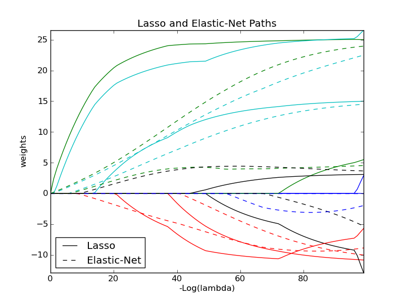

Lasso and Elastic Net¶
Lasso and elastic net (L1 and L2 penalisation) implemented using a coordinate descent.
Script output:
Computing regularization path using the lasso...
Computing regularization path using the elastic net...
Python source code: plot_lasso_coordinate_descent_path.py
print __doc__
# Author: Alexandre Gramfort <alexandre.gramfort@inria.fr>
# License: BSD Style.
import numpy as np
import pylab as pl
from sklearn.linear_model import lasso_path, enet_path
from sklearn import datasets
diabetes = datasets.load_diabetes()
X = diabetes.data
y = diabetes.target
X /= X.std(0) # Standardize data (easier to set the rho parameter)
###############################################################################
# Compute paths
eps = 5e-3 # the smaller it is the longer is the path
print "Computing regularization path using the lasso..."
models = lasso_path(X, y, eps=eps)
alphas_lasso = np.array([model.alpha for model in models])
coefs_lasso = np.array([model.coef_ for model in models])
print "Computing regularization path using the elastic net..."
models = enet_path(X, y, eps=eps, rho=0.8)
alphas_enet = np.array([model.alpha for model in models])
coefs_enet = np.array([model.coef_ for model in models])
###############################################################################
# Display results
ax = pl.gca()
ax.set_color_cycle(2 * ['b', 'r', 'g', 'c', 'k'])
l1 = pl.plot(coefs_lasso)
l2 = pl.plot(coefs_enet, linestyle='--')
pl.xlabel('-Log(lambda)')
pl.ylabel('weights')
pl.title('Lasso and Elastic-Net Paths')
pl.legend((l1[-1], l2[-1]), ('Lasso', 'Elastic-Net'), loc='lower left')
pl.axis('tight')
pl.show()